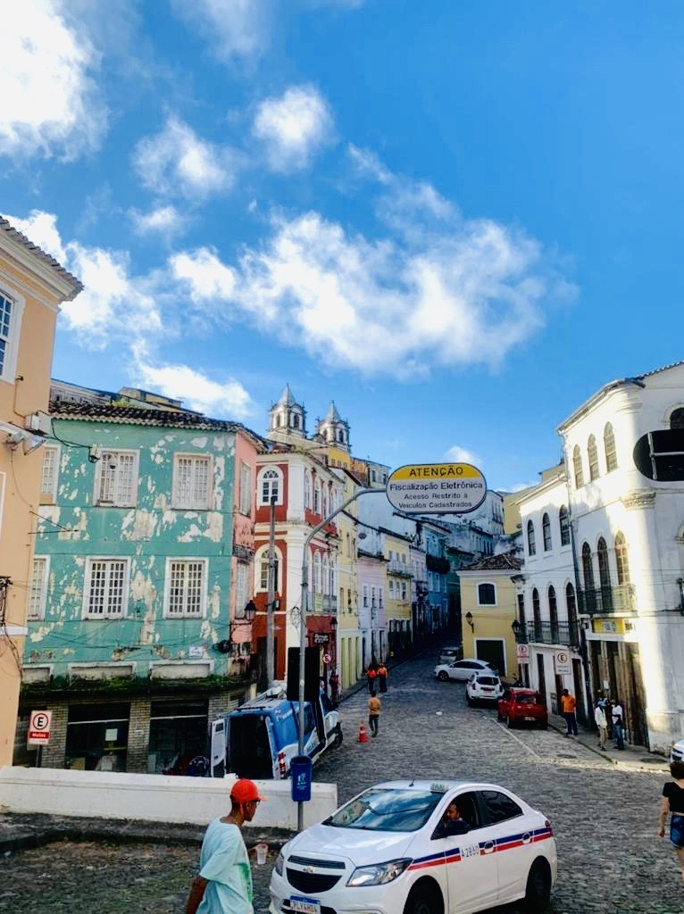
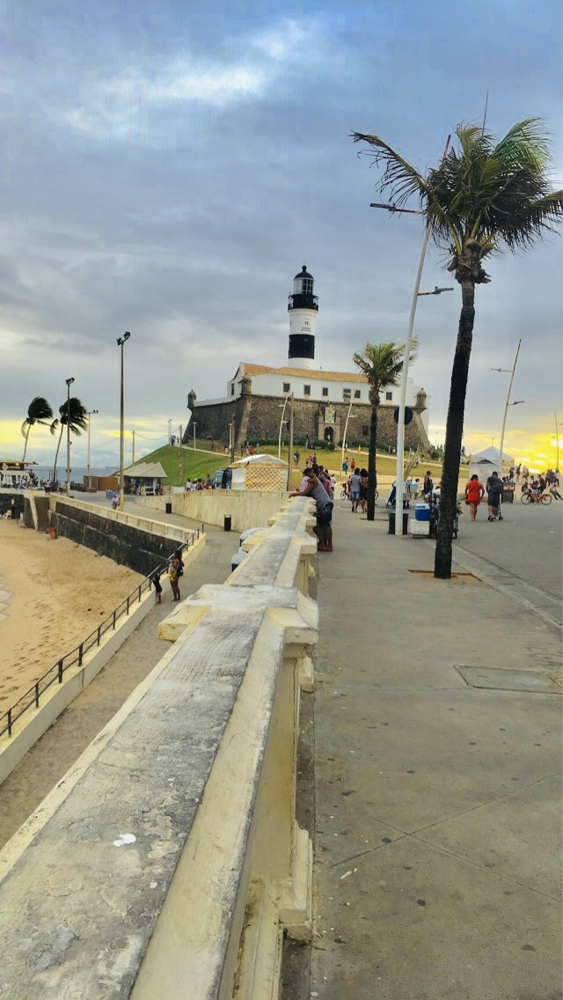
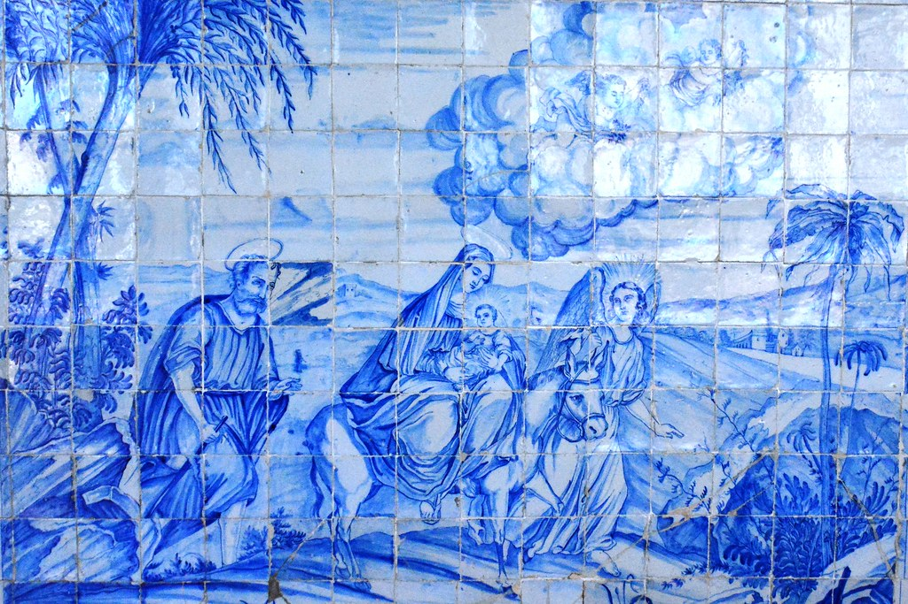
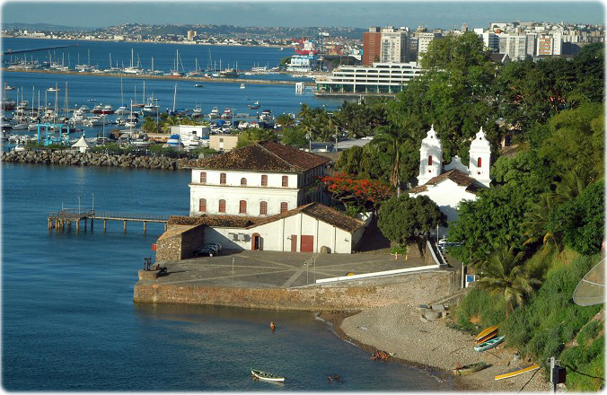
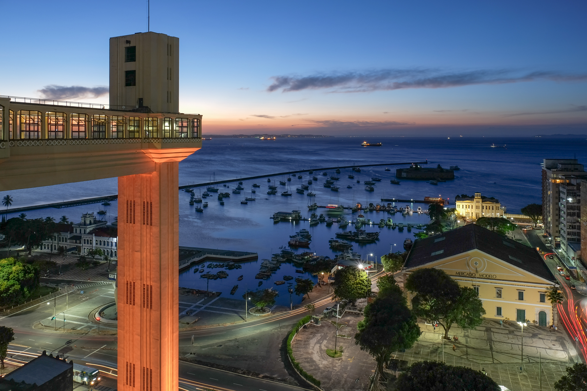

Sehenswürdigkeiten:
In der Stadt gibt es einige spannende Sehenswürdigkeiten, die man besuchen gehen kann. Es gibt das alte Viertel "Pelourinho", das zuvor schon erwähnt wurde. Zu dem Viertel gibt es noch ein "Fun Fact" von dem man unten erfahren kann. Da Salvador an der Küste liegt, gibt es auch den sogenannten Farol da Barra, also Leuchtturm Barra auf Portugiesisch. Dieser Leuchtturm befindet sich an einer Stelle von der Stadt, wo man den Sonnenuntergang am Meer beobachten kann, daher ist dieser Ort bei den Einheimischen und den Touristen sehr beliebt. Dann gibt es die Kirche "Igreja do Bonfim", bei der man Kacheln betrachten kann. Was sich auch lohnt zu besuchen, ist Solar do Unhao, wo Abends oftmals Jazz gespielt wird und es befindet sich auch ein Museum dort. Und zu allerletzt der Aufzug der die Unterstadt mit der Oberstadt verbindet wobei man auch die Sicht auf die Unterstadt genießen kann.
Pelourinho

Farol da Barra/Leuchtturm

Kacheln in Igreja do Bonfim (Kirche)

Solar Unhao

Aufzug
Kosten der jeweiligen Sehenswürdigkeiten:
| Pelourinho | Farol | Solar-Unhao | Aufzug |
|---|---|---|---|
| kostenlos | kostenlos | ca. 20€ | 1€ |
| Sehenswürdigkeit | Preis | Datum | Uhrzeit |
|---|